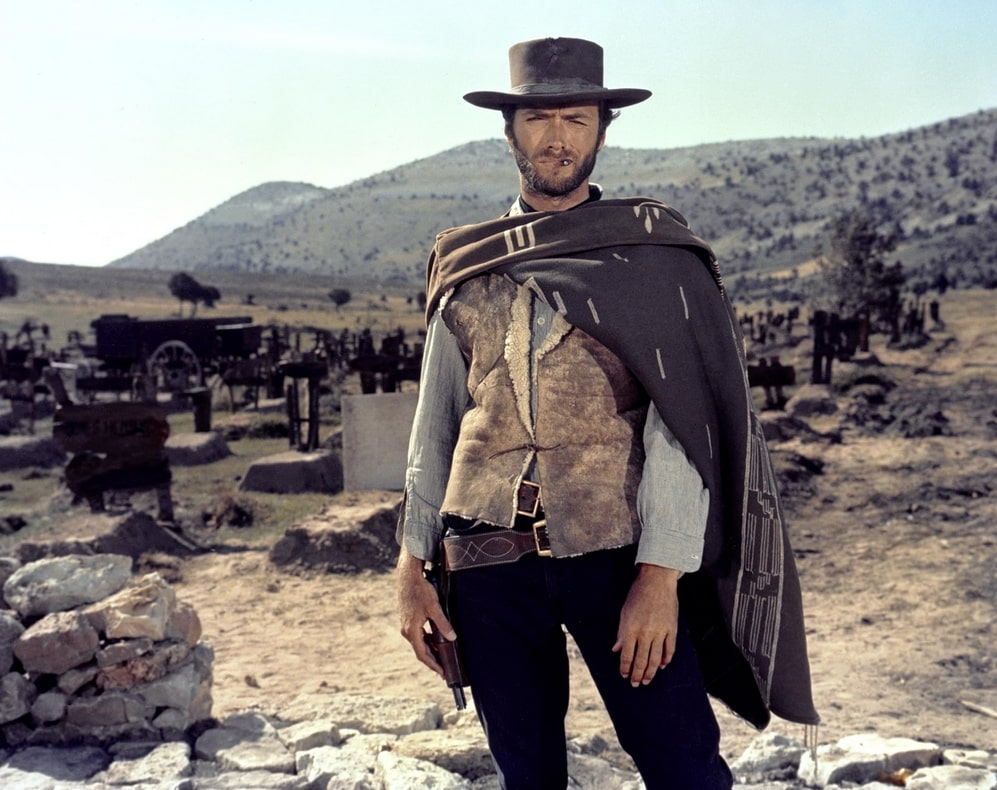

Welcome to the comprehensive guide on the classic Western film "The Good, the Bad and the Ugly"
"The Good, the Bad and the Ugly," an iconic 1966 spaghetti Western film, showcases the directorial brilliance of Sergio Leone. This Italian masterpiece stars Clint Eastwood, Lee Van Cleef, and Eli Wallach in leading roles, bringing to life the characters of the Good, the Bad, and the Ugly, respectively. The film's screenplay, a collaborative effort by Age & Scarpelli, Luciano Vincenzoni, and Leone, with uncredited contributions from Sergio Donati, is based on a story by Vincenzoni and Leone. The movie is celebrated for its grand widescreen cinematography by Tonino Delli Colli and its memorable score, crafted by the legendary Ennio Morricone. With production roots in Italy, the film also had collaborative ties with Spain, West Germany, and the United States, with the majority of its scenes filmed in Spain..The Good, the Bad and the Ugly" stands out for Sergio Leone's signature filmmaking style, characterized by expansive long shots and intense close-ups, alongside a distinctive portrayal of violence, suspense, and stylized gunfights. The narrative centers on three gunslingers embroiled in a fierce competition to unearth a hidden trove of Confederate gold amidst the tumultuous backdrop of the American Civil War, particularly during the 1862 Battle of Glorieta Pass. This film marks the third collaboration between Leone and Clint Eastwood and the second with Lee Van Cleef.
Positioned as the concluding chapter of the Dollars Trilogy, following "A Fistful of Dollars" and "For a Few Dollars More," this film achieved remarkable commercial success, amassing over $38 million globally and playing a pivotal role in catapulting Clint Eastwood to fame. Initially met with mixed reviews due to the prevailing skepticism towards the spaghetti Western genre, "The Good, the Bad and the Ugly" eventually garnered widespread critical acclaim, earning its status as the quintessential spaghetti Western.
The Tale of Blondie and Tuco
In a tale of uneasy alliances and betrayals, "The Man with No Name," also known as Blondie, teams up with Tuco, a notorious Mexican outlaw. Their plan is cunning yet treacherous: Blondie captures Tuco and hands him over to the authorities, only to rescue him later for a share of the bounty. But trust is thin; Blondie betrays Tuco, leaving him to face the harsh desert alone. Tuco, fueled by a burning desire for revenge, manages to escape and turn the tables on Blondie, stranding him similarly in the vast, unforgiving desert.
Their fates intertwine again when Tuco discovers Blondie's secret knowledge of a hidden treasure's location. Realizing they need each other, they reluctantly join forces once more, embarking on a perilous quest for buried gold. But they're not alone in their hunt; a menacing figure named Sentenza, also known as Angel Eyes, is on their trail, seeing them as mere tools to lead him to the fortune.
As Blondie and Tuco navigate a landscape riddled with danger and deception, they find themselves at the final standoff, a grave showdown with Sentenza, each man with his own motives and none ready to back down. In the climactic conclusion, Blondie outsmarts and eliminates Sentenza in a tense showdown. In a twist of fate, he then puts Tuco in a precarious position, hanging by a noose from a grave marker, teetering between life and death. However, as Blondie departs, he fires a parting shot, severing the rope and sparing Tuco's life. Despite their tumultuous past, Blondie leaves a share of the gold with Tuco. Now rich yet abandoned in the desolate expanse, Tuco finds himself alone with his newfound wealth, a testament to their complex relationship and the unpredictable nature of their adventures.
Listen to the Theme
Clint Eastwood as 'Blondie'

Clint Eastwood's portrayal of 'Blondie,' also known as the Man with No Name, stands out in the cinematic landscape as a defining role. 'Blondie' is the epitome of the stoic, skilled bounty hunter, a character who exudes confidence and determination. His journey to unearth hidden gold leads him into a complex alliance with Tuco and, temporarily, with Angel Eyes. The relationship between Blondie and Tuco is fraught with tension yet underpinned by a mutual dependency: Tuco knows the cemetery's name where the gold is buried, while Blondie knows the specific grave's name.
Despite his focus on the treasure, Blondie's character reveals layers of empathy amidst the brutal backdrop of war. His compassion surfaces when he encounters the horrific sight of dying soldiers, leading him to reflect on the senseless loss of life. His act of kindness towards a dying soldier, offering comfort in his final moments, adds depth to his otherwise rugged exterior.
Before stepping into the iconic boots of 'Blondie,' Clint Eastwood was primarily known for his role in the TV series "Rawhide." The transition to the big screen as the Man with No Name came at a crucial juncture in his career. Despite the success of "A Fistful of Dollars" and "For a Few Dollars More" in Europe, Eastwood was not yet a household name in the United States. Sergio Leone's offer to cast him in "The Good, the Bad and the Ugly" came when Eastwood had no significant film offers. After some persuasion and the promise of a substantial fee plus a share of the North American profits, Eastwood accepted the role, leading to one of the most iconic performances in film history. In the script, his character is named "Joe" as a nod to "A Fistful of Dollars," but the dialogue refers to him as 'Blondie,' creating a bridge between his past and present roles.
The Good, the Bad and the Ugly
"The Good, the Bad and the Ugly," directed by Sergio Leone and featuring unforgettable music by Ennio Morricone, is one of the most iconic examples of the Western film genre. The film revolves around a treasure hunt involving three main characters: The Good (Clint Eastwood), The Bad (Lee Van Cleef), and The Ugly (Eli Wallach).
The film's final duel scene is considered one of the most famous and impactful scenes in cinema history. Set in a cemetery, it features a tense confrontation among the three characters, distinguished by its music, cinematography, and acting performances.
Music: Ennio Morricone's compositions, "The Ecstasy of Gold" and "Il Triello," add a unique atmosphere to the scene, heightening the tension and deepening the audience's emotional experience.
Cinematography: Leone's signature use of long shots and close-ups emphasizes the psychological states of the characters, drawing the audience into the scene. The cemetery setting visually conveys the distance and tension between the characters.
Acting: Clint Eastwood, Lee Van Cleef, and Eli Wallach convincingly portray their characters, effectively reflecting their motivations and emotional states. The facial expressions and body language of each character tell their own unspoken stories.
Scene Editing: The duel scene is slowly built up with the characters' looks at each other and the environment, touches to their guns, and thoughtful movements. This creates a rising tension in the audience and amplifies the impact of the final confrontation.
This scene is a lesson in character development, tension building, and visual storytelling in the Western genre and cinema at large. The final duel scene in "The Good, the Bad and the Ugly" remains one of the most unforgettable moments in film history.
Watch the Video
The final duel scene in "The Good, the Bad and the Ugly" is popular for several key reasons:
Music: Ennio Morricone's score dramatically enhances the scene's emotional intensity and tension. The tracks "The Ecstasy of Gold" and "Il Triello" in particular provide an unforgettable atmosphere.
Direction and Cinematography: Sergio Leone's signature directing style, with its long takes and close-ups of the characters' faces, amplifies the scene's suspense and dramatic structure. The psychological confrontation between the characters is masterfully conveyed through visual storytelling.
Acting Performances: Clint Eastwood, Lee Van Cleef, and Eli Wallach deliver strong performances that effectively convey their characters' depths and intentions. The inner worlds of the characters are communicated to the audience through their facial expressions and body language.
Iconic Moments and Visual Motifs: The scene has become one of the iconic moments in Western genre and cinema at large. The confrontation in the cemetery, where the characters' fates and personas clash in this dramatic setting, leaves a lasting impression on viewers.
Cultural Impact: The film and the scene have had such a significant cultural impact that they have been referenced and parodied countless times in subsequent films, TV shows, and even video games.
The combination of these elements makes the final duel scene in "The Good, the Bad and the Ugly" not just a classic in the Western genre but also one of the most memorable moments in cinema history.